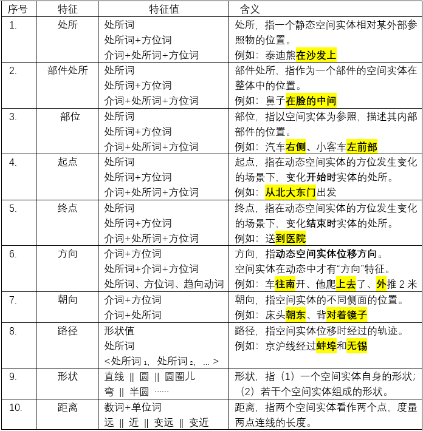
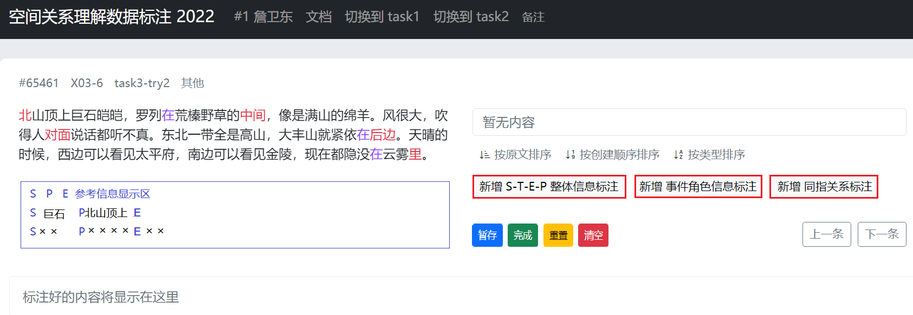

SpaCE2022中文空间语义理解评测数据标注工作指南
task3：句子空间语义信息精标注
1 任务简介
- SpaCE2022课题组通过计算机程序收集了大量自然文本语料。语料来自不同领域，主要是普通日常语言文本，也有少量专业领域的文本（如交通事故类语料）。课题组对语料进行了分词和词性标注。其中跟空间方位信息直接相关的方位词、趋向动词、处所词、部分介词和少量副词，是课题组重点关注的，并在标注页面上进行了分色高亮显示。
- 标注任务：
（1）task1：根据语感判断一段中文文本中高亮词语所表达的空间语义信息是否有异常。（task1标注指南）
（2）task2：分析造成异常的原因具体是什么，包括确定异常类型和异常信息文本片段。（task2标注指南）
（3）task3：标注句中空间实体，空间实体的方位信息，与空间实体方位信息有关的事件（含时间）信息。
标注流程：
（1）通读整段；
（2）确认有空间信息的标点句（以下简称“SS句”）；
（3）选取SS句中的空间实体（S），全部S都应标注；
（4）选取空间实体S的空间方位信息（P），S的全部P信息都应标注（详见3.2节）；
（5）选取与空间实体方位信息有关的事件信息（E），跟S、P相关的全部E信息都应标注；
（6）选取与S、P、E相关的时间信息（T），跟S、P、E相关的全部T信息都应标注（详见第5节）；
（7）对E做进一步事件角色信息标注（详见第4节）；
（8）文本中跟S、P相关实体的同指关系标注（R）（参见“同指关系标注”）；
（9）假S-P信息的标注（F）（参见否定信息标注）。
为方便记忆和称说，本文档将task3的S、T、E、P空间语义四要素信息标注概括为STEP信息标注。
关于S、P、E空间语义要素的说明，参见task2标注指南；
从标注顺序的角度讲，上述信息关系如下：
- P依附于S（标注时，先定S，再定P）；
- E依附于S、P（标注时，先定S、P，再定E）；
- T依附于S、P，E（标注时，先定S、P、E，再定T）；
- R依附于S、P，用于标记文本中指称相同的实体成分，在S、T、E、P标完后，再标注R信息；
- F依附于S、P，用于标记S-P为虚假信息，在S、T、E、P标完后，再标注F信息。
2 标注对象
标注对象主要是空间信息，其次是事件信息（含时间信息）。
空间信息指句中的空间实体及其空间方位信息。可以针对这些信息发问。典型的问题如下：
（1）某物（或某人）在何处？
（2）某物（或某人）某时在何处？
（3）谁使得某物（或某人）某时在某处？以及如何使得某物（或某人）某时在某处？
以上粗黑体字所代表的信息，就是task3标注任务关注的信息。包括：
（1）空间实体的静态方位信息和动态方位信息；
（2）影响空间实体空间信息的事件信息；
（3）跟空间实体空间信息和事件信息相关的时间信息；
2.1 空间信息
在task3标注任务中，空间信息指S和P信息。句中的S和P信息是task3的首要标注任务。
例如：
（1）汤姆在院子里大喊，他平常放在床头的泰迪熊不见了。
S T E P 泰迪熊 平常 放 在床头 泰迪熊 $缺省时间$ 不见 不在床头 上表的STEP信息，可以用于回答关于例（1）句中空间实体“泰迪熊”的如下问题：
（a）泰迪熊平常在什么地方？
（b）泰迪熊现在在什么地方？
句中的STEP信息有显性和隐性之分。
上表中第一条标注P是显性空间信息。
上表中第二条标注P是隐性空间信息。P”不在床头“是通过句中字面符号含义简单推理得到的。“泰迪熊不见了”指：在说话时刻，泰迪熊不见了。也就意味着其空间位置“不在床头”。第二条标注的S、T、P信息中，T信息在句中并无显式表达，按照默认时间理解，可以确定是说这句话的时间，即 “$默认时间$=说话时”；E信息缺失，因为导致S、T、P的行为事件信息在句中是未表达的；P信息是推理得到的，仅传递S”泰迪熊“不在哪里的信息，并不清楚S在哪里。
task3标注任务以显性空间信息为主，适当关注隐性空间信息。
隐性空间信息受限标注原则 —— 隐性空间信息在填写时，需满足两个条件：
仅限于跟句中已有的显性空间信息（已填写P信息）直接相关，并且
要求跟句中一个E信息直接相关。
比如：
例（1）第2条标注的隐性空间信息，跟第一条标注的P信息（“在床头”）直接相关，是第一条P信息的否定信息。并且，这条信息中的E字段为“不见”，是文本中出现的信息。这意味着第2条标注的P信息“不在床头”可以直接由E信息“不见”推导得到。
之所以这样规定，是为了避免推理过度，标注过多的隐性空间信息（比如：泰迪熊平常不在院子里）
2.2 事件信息
在task3标注任务中，事件信息E是次要标注任务。E信息的作用是说明S、P的方式、目的、原因等信息。
E信息的作用，可以通过对比不同事件来显现：
例如：
（2a）汤姆平常放在床头的泰迪熊不见了。
（2b）汤姆平常挂在床头的泰迪熊不见了。
（2c）汤姆平常藏在床头的泰迪熊不见了。
上面三个句子的E信息分别为“放、挂、藏”，而S、P、T信息则没有区别。E信息的不同，可以表示空间信息的细微差异：
“放”意味着“泰迪熊”在床头表面区域，处于“跟床头接触”的空间关系中；
“挂”意味着“泰迪熊”在床头上方区域，处于“未跟床头接触”的空间关系中；
“藏”意味着“泰迪熊”在床头位置，但不在床头表面，而是被某个物体“遮盖”了，未暴露在人的视线中。
跟task2任务不同的是，在task3任务中，要在标注E信息的基础上，进一步标注每个事件E的事件的语义角色（详见第4节）。
例（1）的E事件语义角色信息如下表所示：
E 主体角色 客体角色 空间角色 时间角色 …… 放 汤姆 泰迪熊 在床头 平常 不见 泰迪熊 所谓事件的语义角色，就是动词周围的名词性成分所起到的不同的语义功能。对这些名词性成分的不同语义功能的标注，有助于更全面地理解空间实体的空间方位信息之间的联系。
在事件语义角色的标注中，包含了空间实体（S信息）所充任的角色，空间方位（P信息）所充任的角色，事件时间（T信息）所充任的角色。
2.3 时间信息
在task3标注任务中，时间信息T是次要标注任务。T信息是非独立的，依附于<S，P，E>。T信息有两类：
时值时间：指句中表达时间义的词语所负载的时间信息。如上面例中“平常”是时间义词语，即为时值时间。
参照时间：指未在句中明示的时间信息。具体又分两种参照方式：
- 说话时间：说出一句话的时间。如例（2a）-（2c）中“不见了”对应的说话时间一般理解为“现在”。参照说话时间可以表达虚拟情境，例如“如果他在北京的话，这个问题就好结局了”，可以指“他在北京”这一空间信息，对应过去某个时间，或者将来某个时间。
- 事件时间：句中每个事件自身都自带有T信息。如上面例中“放、挂、藏”的时间。可以用代表事件的动词（记作V）来定位其时间。标注时用“V之时” “V之前” “V之后”等指称不同的时间。如例（2a）中动词“放”可以指称的时间包括：“放之时” “放之前” “放之后” 等等。（详见第5节时间信息标注）
注意：
- 句子的词序隐含了事件之间的顺序信息，可以由此推断句中事件的时序关系，确定时间范围。
- 标注T信息的优先顺序是：时值时间 > 参照时间（ 事件时间 > 说话时间）。
3 空间信息标注
3.1 空间实体信息S的标注
空间实体S的标注要求比较简单。跟task2对S的要求基本一样。不过，也有几点需要注意：
句中的一个名词性成分是S，当且仅当它有P信息。比如例（2a）“泰迪熊”是S，而“汤姆”不是S。
选取S的具体内容时，遵循语义简明原则，即所选取字符片段，能区别于句中其他实体即可。
典型的S是现实物理空间中的实体。此外，也包括信息空间中的实体，虚拟认知空间中的实体。
如果没有针对句中实体的空间信息发问的动机，则该实体不是S。
例如：
（3）照片上那只狗被拴在一根柱子上。
（4）这句话似一幢楼塌下来压在我们头上，……。我们似乎走进了一条长长的黑地道……
（5）史婆婆道：“你要是伤了我徒儿性命，我这就上碧螺山去，一辈子也不出来了。”
（6）…… 周冠仁从事法医工作十几年来，养成了一出家门就将一切抛在脑后的性格。
例（3）是一个信息空间，“狗”在信息空间“照片”中，也属于需要描写其P信息的空间实体S。
例（4）是虚拟想象的场景，同时也是有修辞色彩的句子。其中“一幢楼”,“我们”都是S，有相关P信息。
例（5）是虚拟条件句，“我”的空间信息“上碧螺山去”尚未发生，将来条件得到满足时可能发生。
例（6）中“周冠仁”不是S，因为无法以此句信息为基础，提出有关该实体的空间方位信息问题。
并列结构中的多个空间实体，如果P信息相同，则可以作为一个整体看待，一起填入S（参见“拼接与并置”操作）；如果P信息不同，则应分别看作不同的空间实体，处理为多个S，即分别标注多条STEP信息。
名词词组中的中心名词是S的核心信息，必须填入S；其他修饰中心名词的修饰性成分，是否需要填入S，根据“语义简明原则”的精神，以是否对S有指别度（identifiability）价值作为判断标准。比如上面例（3）“一根柱子”的“一根”，对于S的指别度没有影响，只说“柱子”，也知道是文本中的哪个实体，就不要把“一根”填入S。
空间实体在文本中可能以指代词形式表达（如人称代词“你、我、他”），也可能以指称词形式表达（如姓名、机构名等专名）。
指代词和指称词的同指关系（co-reference），应以“ = ”形式标注，如例（5）中“ 我 = 史婆婆 ”。
同指关系将单独标注，不在S、P、E、T中分别标注（参见第6节操作说明）。
注意：
- 只需标注有P信息的空间实体的同指关系。文本中两个实体同指，如果与空间方位信息无关，则不需标注同指关系。
- 有同指关系的空间实体，共享STEP信息。两个或多个同指空间实体S的STEP信息共享，意味着有同指关系的空间实体S，只需要标注其中一个空间实体S的STEP信息，不需要重复标注，除非表达同指关系的是集合型（复数）名词组，内含多个独立空间实体。这种情况可能需要分别标注各个空间实体的STEP信息。比如“两个人 = 聂性初 马继平”，尽管标注了“两个人”与“聂性初和马继平”的同指关系，但“两个人”跟“聂性初”，“两个人”跟“马继平”，并不是平等关系，而是包含关系，因此STEP信息并一定不能共享，需要根据文本的实际情况，分别作为3个空间实体S，分别标注3条STEP信息。
- 同指关系标注，以指代词和指称词的同指为主，其他名词组（如“数量词+名词”）的同指关系，一般不需要标注，除非对整段文本中的空间方位信息标注有简化作用，才需要标注。也就是说，通过标注一般名词组之间的同指关系，可以共享STEP信息，从而减少整段文本的STEP信息标注量。
3.2 空间方位信息P的标注
空间方位P的标注是task3标注任务的重中之重。包括多个具体项目，需要根据句中实际信息出现情况来标注。下表是细化P信息的空间方位信息相关特征，特征取值的表达形式（用词语组合模式来表示），以及具体含义说明。

关于表1的说明：
（1）表中“介词、方位词、趋向动词”等是沿用一般《现代汉语》教科书中定义的汉语词类名称。“处所词”指有处所语义的词语，比如“北京、图书馆、人群、太空、未名湖、郊外、四处”等等，处所词能跟“在、到、从”等有空间方位表达功能的介词组合，能跟“上、下、左、右、前、后、里、外”等方位词组合。
（2）“部件处所”特征，专门针对一个空间实体作为一个更大空间实体的部件，描述其空间方位。关于一个空间实体的位置信息，有两个描述视角，一个是以空间实体周围的外部物体为参照物时的空间信息，也就是表中第1项空间特征“处所”的含义，例如：“鼻子在嘴的上方”，其中“鼻子”的处所信息是“在嘴的上方”；另一个视角是以整体为参照物来描述其中部件的方位，例如：“鼻子在脸的中间”，以整体“脸”为参照物来描述“鼻子”的方位，就需要标注“部件处所：在脸的中间”。参见示例10。
（3）“部位”特征，指从一个空间实体看其内部组成部分的位置。典型的场景是交通工具的不同部位的描述。例如“货车右前部” “小轿车左后部”等。参见示例12。
（4）“朝向”特征，涉及到空间实体自身的特性，只有空间实体的不同侧面功能不同时，才有描述“朝向”的需要。比如：一块自然界的石头没有朝向；而一个由石头雕刻而成的人体石雕则有朝向。因为人体作为一个立体实体，其不同侧面是有不同功能的；表达一个空间实体的“朝向”一般有两种方式：一种是借助方向表达，比如“床头朝东”；另一种是借助另一个空间实体来表达，比如“背对着镜子”。两种表达通常都需要加介词（形式标志）。“朝向”特征，既适用于静态空间实体，也适用于动态空间实体。前者没有“方向”特征，后者则既有“朝向”特征，也同时有“方向”特征。比如，假设甲和乙面对面站立，甲面朝南，乙面朝北，甲以后退方式离开乙，那么，以乙的观察视角来描述甲的空间方位信息，就是甲的位移“方向”为北，甲的自身“朝向”为南。
（5）“路径”特征，包括实际位移和静态的路线（相当于想象的位移）。“路径”取值是原文中的字符串。“路径”值有3种可能性：
- （I）用形状表达路径，如“之字形”；
- （II）用有“通路”“通道”功能的处所词表达路径，如“河西走廊、101国道、G6高速”；
- （III）用位移过程中经过的多个空间实体组成的列表表达路径，如<北大东门，中关村北站，清华西门>。多个实体组成的路径，可以通过“并置”操作填入“路径”字段（参见“拼接与并置”）。
（6）“形状”特征，可以起到帮助空间实体定位的作用。例如：“一个花圃是圆环形的，花圃中每隔4米放置一个花盆”。句中这些花盆之间的相对位置关系，就需要借助花圃的形状“圆环形”来说明。“形状”特征有两种使用场景：
- （I）单个空间实体的形状 （如上面“花圃”的例子）
- （II）多个空间实体构成的形状（如：公司总部大楼A座、B座、C座，排成了一个“品”字形）
如果需要描述多个空间实体共同构成的形状，这些空间实体可以并置方式填入S（参见“拼接与并置”）。“形状”取值都是原文中的字符串。
（7）“距离”特征是二元关系型特征，涉及到两个空间实体。两个空间实体以并置方式填入S（参见“拼接与并置”）。距离的取值有两种情况：一是文本中有表达距离义的具体词语，一般是“数词+单位词”形式；另一种是定性描述：用“远、近、变远、变近”四个系统预定义关键字来表达。如下表所示：空间实体“手术室”和“住院部”的距离“200米”是从文本中选取的片段（填入“距离1”字段），“急诊”与“医院大门”的距离“近”是系统预定义关键字（填入“距离2”字段）。“距离1”和“距离2”两个字段，都需要通过“添加字段”操作添加，然后再标注具体取值（参见“添加字段”操作说明）。
S 距离1 距离2 手术室 住院部 200米 急诊 医院大门 近 （8）以上P信息项（10个特征），跟空间实体S的对应关系如下表所示：
S 特征1、2、3、4、5、6、7、8 特征9 特征10 单个实体 √ √ × 两个实体 √ √ √ 多个实体 √ √ × S-P对应关系及语义解释的5种情况：
类型 S P S-P的语义解释 说明 适用P特征 1 s1 p_value s1的P特征值是p_value 分配式 特征1-特征9 2a s1, s2 p_value s1的P特征值是p_value
s2的P特征值是p_value分配式 特征1-特征8 2b s1, s2 p_value s1和s2的P特征值是p_value 加合式 特征9-特征10 3a s1, s2, s3 p_value s1的P特征值是p_value
s2的P特征值是p_value
s3的P特征值是p_value分配式 特征1-特征8 3b s1, s2, s3 p_value s1和s2和s3的P特征值是p_value 加合式 特征9 说明：表中s1，s2，s3指具体的空间实体，p_value指一个P信息项的取值。
4 事件角色信息标注
事件角色信息标注，是以动词为中心，描述句中动词周围出现的名词性成分。这些名词性成分表示的人或事物，在动词表示的事件中语义功能不同，也就是扮演着不同的角色。
事件中的语义角色有不同的分类体系，分类粒度粗细有所不同。本课题设计了一个7类语义角色的标注体系（参考附录1，进行了大幅简化）。角色名称参照命题语义标注语料库（Propbank）的方式；角色含义参照北京大学计算语言学教育部重点实验室在国家973项目“面向三元空间的互联网中文信息处理理论与方法”（项目编号：2014CB340500）子课题4：“融合三元空间的中文语言知识与世界知识获取和组织”中所用的定义（参考附录2）。
| 序号 | 角色标记 | 对应论旨角色 | 含义 |
|---|---|---|---|
| 1. | arg0 | 施事（共同施事）、当事（间接当事） | 核心角色1：主体 |
| 2. | arg1 | 受事、系事、结果、对象、内容 | 核心角色2：客体 |
| 3. | arg2 | 与事 | 核心角色3：受益/受损者 |
| 4. | arg3 | 工具、材料、方式 | 外围角色1：伴随者（准外围） |
| 5. | argM | 事量、范围、原因、目的 | 外围角色2：环境成分（真外围） |
| 6. | argS | 起点、终点、路径、方向、处所 | 外围角色3：空间角色 |
| 7. | argT | 起始、结束、时点、时段 | 外围角色4：时间角色 |
注意：
（1）并不是句中所有的谓词，都要标注其语义角色。仅需针对跟S、P有关的E事件，标注其角色信息。
（2）E的事件角色描写，尽量在标点句范围内，选取符合上表中7个角色要求的成分。角色的取值应该直接从原文中选取字符片段。
（3）argM泛指修饰性的外围语义角色（Modifier）。argM比arg3更外围，跟事件核心动词的关系更松散。比如：用刀砍了两天树。“刀”是动词“砍”的工具角色，属于外围语义角色，但跟”两天‘这个事件时间量成分相比，“刀”跟“砍”的关系更紧密。因为“刀”能组合的动词范围比较小，“刀”跟如“等”“听课”之类的动词就没有组合关系，无法充当“工具”角色，而“两天”跟动词组合的范围就很大，可以“等两天、听两天课”，所以，如果针对“用刀砍了两天树”来标注语义角色，则“刀”标注为动词“砍”的arg3，而“两天”则标注为argM。
（4）E如果是动词的离合用法，应将分离的成分（不连续字符）拼接成一个完整单位。
（5）标点句内的角色如果只有指代性成分（如人称代词、身份词、绰号等），则填入指代性成分即可，不需要跨句寻找到指称性成分（如姓名，单位名称等专名）。
例如：
- （7）他昨晚在宾馆洗了两次澡。
- （8）吴仲荣掏出办公室的钥匙，放到桌上，他缓缓地站起来，向门口走去。
上面的高亮成分是这3个例句的E成分，其事件角色信息标注如下：
句子 E arg0 arg1 arg2 arg3 argM argS argT （1） 洗 · 澡 他 两次 宾馆 昨晚 （2） 站 他 所有角色都是在标点句范围内选取跟当前E谓词相关的成分，不应标注与E无关的其他成分。比如例（3）中“办公室” “钥匙” “桌上” “向门口” 等，都跟“站”这个动作行为无关，而且也不在“站”所在的标点句中，因此不能标注在 arg0 到 argT这些角色中。
5 时间信息标注
时间信息标注，是以P信息为基准，描述每个P信息伴随的T信息；
如果一句话标注了多个P信息（参见表1），则每个P信息都应考虑标注对应的T信息。
T信息有三种类型（参见2.3）。标注时优先考虑时值时间，再考虑参照事件时间或说话时间。
（1）如句中有跟S、P信息相关的明确的时间义词语，则应标注时值时间信息；
（2）如句中未出现时值时间信息，则有两种情况，一种是句中空间信息对应的时间为说话时间；另一种是句中空间信息对应的时间为长时间的惯常状态。对于前一种情况，T信息根据相对现在的时间有3种取值：“说话时”（相当于“现在”）“过去”和“将来”；对于后一种情况，T信息标记为“常态”。
（3）如不是以上情况，则考虑标注事件时间信息。实践中，可根据T信息对P信息的重要程度来决定是否标注。
下面表3是关于T信息具体取值的说明。
| 序号 | T信息标记 | 含义 | 示例 / 说明 |
|---|---|---|---|
| 1. | "字符串" | 时值时间 | 上午、13：15，2022年6月25日，儿童节，夏至 |
| 2. | 说话时 | 说话时间 | 参考语境说话人时间信息，“说话时”为系统关键字 |
| 3. | 过去 | 说话时间 | 参考语境说话人时间信息，“过去”为系统关键字 |
| 4. | 将来 | 说话时间 | 参考语境说话人时间信息，“将来”为系统关键字 |
| 5. | V之前 | 事件时间 | 参考句内事件（以V标识）的时间信息，V是句中动词 |
| 6. | V之后 | 事件时间 | 参考句内事件（以V标识）的时间信息，V是句中动词 |
| 7. | V之时 | 事件时间 | 参考句内事件（以V标识）的时间信息，V是句中动词 |
| 8. | V之间 | 事件时间 | 参考句内事件（以两V标识）的时间信息，V是句中动词 |
| 9. | 常态 | 惯常状态 | 相当于“历来如此”，“常态“为系统关键字 |
注意：
○ 句中若字面上有“现在”类时间词语，并且其所指时间就是说话时间，但T信息类型仍优先归属”时值时间“，需从句中选取“现在”这两个字符填入T信息。
○ T信息不是task3标注的主要内容。为简化标注操作，约定：
●（1）T为空时，代表时间信息未知、或不受关注；当T信息中填值时，表示该信息值得强调。
●（2）如果已填写E信息，同时T信息为空，则代表T是“E中所填动词V之时”。
●（3）如果未填写E信息，同时T信息为空，则代表T是“常态”，或者T信息不受关注。
●（4）上表中第1类时间信息，必需填入T信息中（除非跟S、P无关）。
●（5）上表中第2类到第9类时间信息，均可不填。
●（6）填写T信息遵循“非必要，不需填”原则：T信息可以不填写，除非T信息对于说明S、P信息比较重要，即有区别价值，如果不填T信息，会导致S、P信息不清楚，与其他状态信息发生混淆。
以上关于S、T、E、P信息标注的说明，均以肯定信息真实性为假设条件。
文本中也会出现对空间信息做否定性陈述，或字面上不一定有否定表达，但从推理可知空间信息为假的情况。
对空间信息为假的情况，采用F信息标注（Facticity)，取值为false（f），标注当前STEP信息为假。
例（1）汤姆在院子里大喊，他平常放在床头的泰迪熊不见了。
STEP-F信息标注如下：
序号 S T E P F 1 泰迪熊 平常 放 在床头 2 泰迪熊 说话时 不见 在床头 f 注意：F信息的默认值（default value）是“真”，以t（true）标记，一般不填。只有当F信息值为“假”时，才填写f标记。f标记的含义是，当前 S的空间方位信息P 为假。
- Task3标注任务，全部待标注信息（标签）数量统计如下表：
表4：Task3标注信息标签数量总表
信息大项 大项标签数量 信息小项 小项标签数量 合计 S 1 0 1 E 1 arg0, arg1, arg2, arg3, argM, argS, argT 7 8 T 0 " "，说话时，过去，将来，常态，之前，之后，之间，之时 9 9 P 0 处所，部件处所，部位，起点，终点，方向，朝向，路径，形状，距离 10 10 F 1 0 1 R 1 0 1 合计 4 26 30
STEP信息标注原则1：信息内容最大化
Task3标注任务就是针对一段有空间信息的文本，尽量全面、充分地将文本中显性和隐性的空间信息提取出来，按照本文档所定义的30个信息项的要求，逐一进行标注（有某项目则标，无某项目则不标）。其中S和P对应的11个信息项为重点标注项目。以显性P信息标注为主，隐性P信息标注为辅。
STEP信息标注原则2：表达形式最简化
Task3标注中，如果P信息是同类项分配关系，只需标注一次，不需重复标注。比如：
- 并列：多个实体如果共享同样的P信息，则可以把多个实体以并置方式填入S，只标注一条STEP信息。
- 同指：两个实体或多个实体同指，这些实体的STEP信息只需要标注一条。
Task3标注中，不要通过转换方位视角来标注隐性P信息（参见隐性空间信息受限标注原则）。比如：
例句：“某甲站在某乙的左边”。
STEP标注中，隐性空间信息遵循受限标注原则
标注1：以某甲为空间实体S，则某甲的P信息为“在某乙的左边”；
标注2：以某乙为空间实体S，标注相应的P信息“在某甲的右边”。
标注2是不需要的隐性P信息。
受task3标注工具程序设计的限制，所有标注信息均需从原文中选取字符，或由程序提供预置关键字。一般来说，仅有例句中的文本字符，无法实现标注2。因为文中并没有“右边”这个词。但是，假如“某甲在某乙的左边”这个片段所在的整个文本中出现了“右边”，技术上讲，是可以出现标注2的情况的。因此，需要根据“隐性空间信息受限标注原则”，规定：不允许在标注时选取（实为借用）“右边”这个片段来构建一条STEP信息：即如上所示标注2的形式“某乙在某甲的右边”是错误标注。
6 操作说明
操作界面：
（1）标注操作区：操作界面左侧是语料文本显示区（在上）和“S-P-E参考信息显示区”（在下），右侧是操作面板。面板初始界面上有3个“新增×××”导航按钮（下图红色框所示），分别点击后，会对应显现出3个信息标注区： 
- S-T-E-P整体信息标注区（逐条标注文本中的S、T、E、P信息，其中重点标注内容是S和P信息）
- 事件角色信息标注区（标注E的arg0、arg1、arg2、arg3、argM、argS、argT角色）
- 同指关系标注区（标注空间实体的指称关系）
（2）标注显示区：在3个“新增……”按钮的上方，有标注内容实时显示区（图中“暂无内容”所在文本框区域）
（3）标注内容排序：在标注显示区下方，有3个排序按钮，分别可以对标注结果按照3个标注排序，包括：
- 按照词语在原文中的顺序排序
- 按照标注时创建条目的顺序排序
- 按照“STEP整体信息、事件角色、同指关系”3个组排序。
操作顺序：
step1：在S-T-E-P整体信息标注区
step1-a：标注S信息，在语料原文中选取空间实体文本片段，填入“实体S”对应的文本框；
step1-b：标注P信息，选取合适词语填入空间特征（处所、起点…）对应的文本框；
step1-c：标注E信息，选取S-P对应的动词，填入“事件E”对应的文本框；
step1-d：标注T信息：
- 如果原文中有时值时间，从文本中选取词语，填入“原文时间”对应的文本框；
- 如果原文中没有时值时间，参考时间为“说话时”，则从“参照时间”下拉菜单中选取填入。
- 如果参考时间为原文中事件，则先从文本中选取动词，填入“参照事件”对应的文本框，然后在“参照时间”下拉菜单中选取合适的参照时间值“之前”“之后”之间“”之时“等。
step1-e：标注F信息：若当前S-P信息为假，在“添加字段”下拉菜单选取“事实性”，添加false标记。
step2：在事件角色信息标注区，选取当前S、P所在标点句内的事件语义角色，填入角色对应文本框；
step3：在同指关系标注区，选取文本中指称相同的指代词和指称词，填入“同指片段”对应文本框；
注意事项：
- S-T-E-P整体信息标注区，从上到下分为4个子区，分别对应S、P、E、T的信息填写。
- 为使标注区域版式简洁，其中P区域没有把表4中P信息10个小项全部列出，而是预置了其中比较常见的5项：处所、起点、终点、方向、朝向。另外5项，出现频次相对较低，如果需要标注，可以通过“添加字段”的方式，添加到S-T-E-P整体信息标注区，然后再填写相应信息。
- F信息的出现频次也较低，如果需要标注，也通过“添加字段”方式，添加到S-T-E-P整体信息标注区。添加时在下拉菜单中选择“事实性”，添加后程序自动为F信息项赋值为false。
下表是“添加字段”菜单项对应的待标注信息项，以及添加一个字段后相应的操作说明：
序号 信息大项 信息小项 “添加字段”菜单项 操作 1 P 部件处所 部件处所 从原文中选取片段填写 2 部位 部位 从原文中选取片段填写 3 路径 路径 从原文中选取片段填写 4 形状 形状 从原文中选取片段填写 5 距离 距离1 从原文中选取片段填写 6 距离2 下拉菜单选项 [远、近、变远、变近] 7 F 事实性 无
- “距离”取值有两种情况：如果原文中有关于两个空间实体距离的具体表述，则相应文字内容填入“距离1”字段；如果原文中没有，但距离信息可以推知，则用“远、近、变远、变近”来描述，填入“距离2”字段。“距离1”和“距离2”这两个字段，都需要通过“添加字段”下拉菜单选取添加。
具体操作方法请参见以下视频说明：
注意1：拷贝、粘贴、修改、删除、存储 —— 这5个基本操作均为鼠标点选操作。
注意2：除点“删”可删除外，点击×号也可删除。信息标注区右上角的 × 号表示关闭当前标注区，不是删除。
注意3：每条文本框标注信息，均需点击“存”来保存；如果没有点击“存”，填入内容将不会被记录！！！。
注意4：新增与克隆 ——
新增记录：操作面板上新增按钮：（1）新增STEP整体信息标注；（2）新增事件语义角色标注；（3）新增同指关系标注。这3个新增，是为数据表增加一条新的记录（record）。
新增字段：

点击上图中加号图标，可以为数据表添加添加一个新字段（field）。
克隆记录：

点击上图中“克隆”图标，可以将当前记录（STEP整体信息）复制，并新增一条同样内容的新记录。

拼接：点击⊕加号，把当前拷贝字符串与文本框中原有字符串进行拼接，合并为一个单位。
并置：点击“填入”，把当前拷贝字符串与文本框中原有字符串并置，使文本框内容为两个并列单位。
- 以上面的例子来说，如果在原文中选取词语“姐姐”后，点击⊕加号，就是跟文本框中已有的“阿曾”拼接，成为“阿曾姐姐”，仍然是一个S；点击“填入”，就是跟文本框中已有的“阿曾”并置，这时候实体S相当于有两个了，一个是“阿曾”，另一个是“姐姐”，即“阿曾和姐姐”。
- 拼接操作比较常用的场合是将文本中的离合词恢复为一个单位，或者将分在两处但属于同一信息项的P信息片段拼接成一个单位。
- 并置操作比较常用的场合是列出多个P信息相同的空间实体；列出需要描述形状信息的两个或多个空间实体；列出需要描述距离信息的两个空间实体。
特别提醒：标注过程中，应经常点击“暂时保存”按钮，保存已标内容。完成一段语料全部信息标注后，应点击“完成并保存”按钮，再进行“下一条”语料的标注。如果没有保存就点击“下一条”或“上一条”，将导致当前标注内容丢失！！！
附录

说明：上图所示语义角色层级体系，是国家973项目“面向三元空间的互联网中文信息处理理论与方法”（项目编号：2014CB340500）子课题4：“融合三元空间的中文语言知识与世界知识获取和组织”的研究成果。
下表是28个论旨角色的含义说明及示例（黄色高亮成分即为对应语义角色在当前句中的示例，方框中是谓词）。

Tips
- 标注工具仅支持电脑端chrome、firefox浏览器。
- 如有任何问题，请联系小组长。
文档最近更新时间：2022-06-30
北京大学SpaCE2022评测任务课题组
本项目得到国家科技创新2030“新一代人工智能”重大项目——“以自然语言为核心的语义理解理论、模型与方法”（项目号：2020AAA0106701）支持。